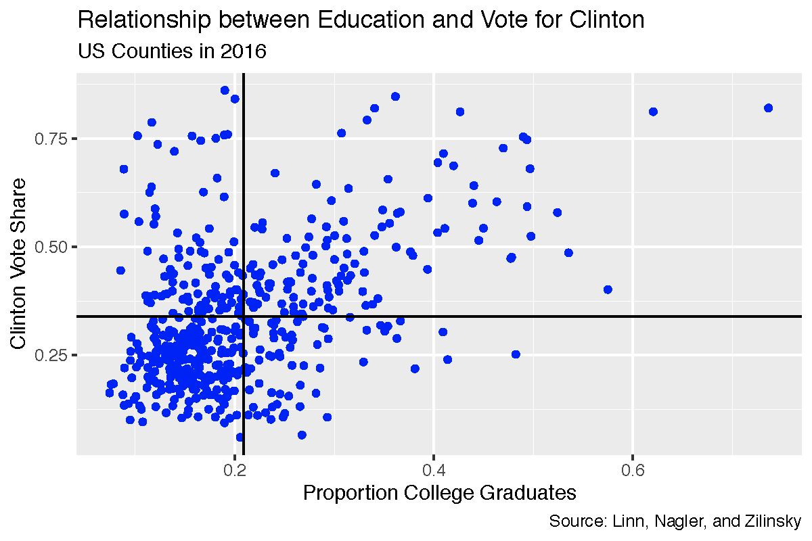
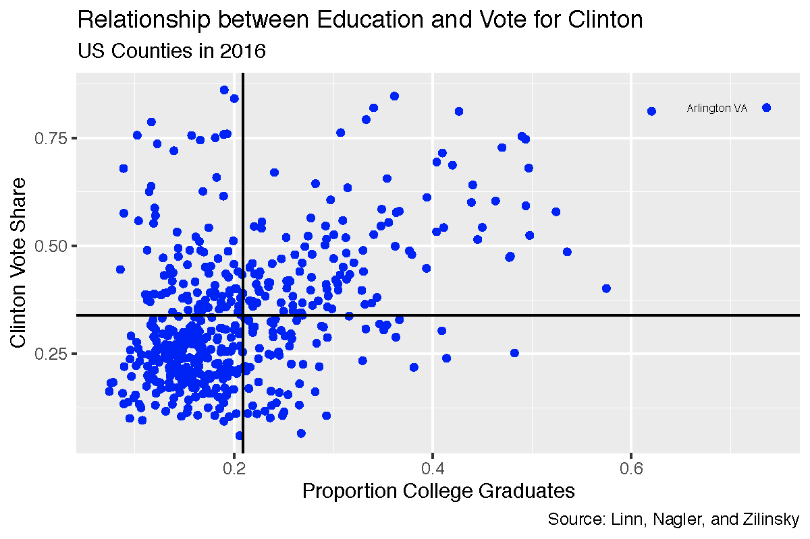
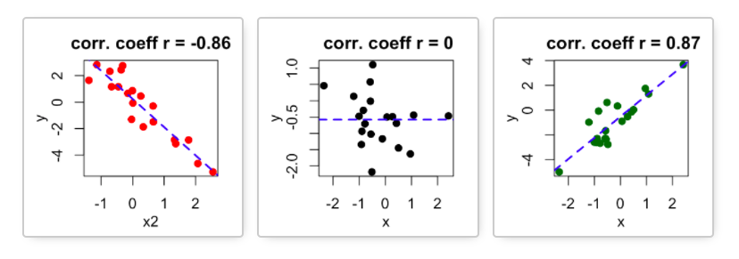
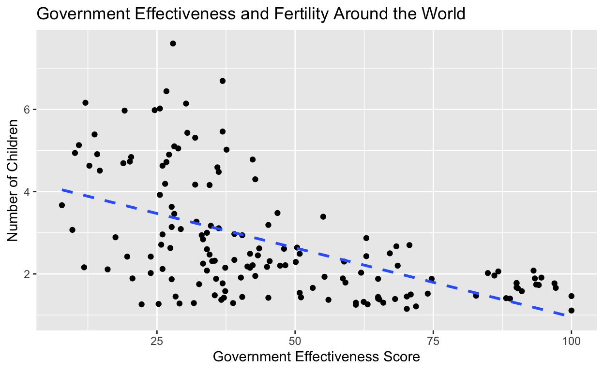

Learning Objectives
In this tutorial, you will continue learning how to describe the relationship between two variables. This time we will focus on how to do so when both variables are measured at the interval level. Specifically, we will cover:
- How to conduct a descriptive analysis of the relationship between
interval variables with scatter plots using the
ggplot()function in the R package ggplot2. - How to conduct a descriptive analysis of the relationship between two interval variables using Pearson’s correlation coefficient and plots.
Bivariate Description
In the previous tutorials on bivariate description, we considered how to describe the relationships between variables measured at the nominal and/or ordinal level. We presented two tools available to summarize these types of relationships. We produced and interpreted the information in a cross-tab, which is a table that shows the distribution of cases (counts or proportions) across values of the dependent variable for cases that have different values on the independent variable. We then showed how to visualize the information in the cross-tab using a grouped bar plot.
In the last tutorial, we considered how to conduct a descriptive analysis of the relationship between an interval variable and a nominal/categorical (or ordinal) variable. Typically we either compare a single summary statistic, the mean, or we compare the distribution of the interval variable for each of the values of the nominal or ordinal variable.
If our interest lies in the relationship between two interval level variables, we can summarize the relationship between them using Pearson’s correlation coefficient. The correlation coefficient quantifies the strength and direction of the linear association between two interval level variables. The logic of correlation is most easily understood in the context of a scatter plot. So we will introduce them first. A scatter plot provides a visual display of the nature, degree, and strength of the relationship between two interval level variables. It presents pairs of values for each unit of analysis on two variables measured at the interval level. The position of each dot on the horizontal and vertical axis indicates values for an individual data point.
Let’s start with a picture of a scatter plot:

This scatter plot shows the relationship between the two interval level measures dem2p_vote_share, the share of the presidential vote cast for Hillary Clinton in 2016, and prop_college_grad, the proportion of college graduates in US counties. Each dot represents one unit of analysis, i.e., one county. Its placement on the x-axis represents its value on the variable plotted on the x-axis, i.e., proportion college graduates. It’s placement on the y-axis represents its value on the variable plotted on the y-axis, i.e., proportion voting for Clinton. The horizontal (vertical) line is located at the mean value of the proportion voting for Clinton (proportion college graduates).
Consider the point in the upper right and labeled Arlington, VA. This point corresponds to 0.74, the share of adults who graduated college, (plotted on the x-axis) and a 0.82 share of the votes cast for Clinton (plotted on the y-axis).

Points – like Arlington county VA – in the upper right quadrant have values of prop_college_grads above the mean and values of dem2p_vote_share above the mean. Points in the lower left quadrant have values of prop_college_grads below the mean and values of dem2p_vote_share below the mean. When points are clustered in these two quadrants – as in this example – there is a positive relationship between the two variables.
Scatter plots are widely used and very informative about the nature of the relationship between two interval level variables. We can use the summary statistic, Pearson’s correlation coefficient, to quantify the strength and direction of the relationship. Pearson’s correlation coefficient, denoted \(r\), is given by the following formula:
\[r=\frac{1}{n-1} \Sigma \frac{ (x_i-\bar{x}) (y_i-\bar{y}) }{s_x s_y}\] where
- \(x_i,y_i\) are the individual unit observations of \(x\) and \(y\), respectively
- \(\bar{x},\bar{y}\) are the sample means of \(x\) and \(y\), respectively
- \(s_x,s_y\) are the sample standard deviations of \(x\) and \(y\), respectively
- \(n\) is the sample size
Think through what this formula tells us. When unit \(i\)’s value of both \(x\) and \(y\) are above (or below) \(\bar{x}\) and \(\bar{y}\), \(i\)’s contribution to \(r\) is positive. The more often that is true in our data, the greater \(r\). In contrast, when unit \(i\)’s value is greater than the mean on one variable and less than the mean on the other, \(i\)’s contribution to \(r\) is negative. The more often that is true in our data, the more \(r\) will be negative. If there is no systematic relationship between \(x\) and \(y\) then \(r=0\).
The value of \(r\) ranges between -1 and +1.
- \(r>0\) indicates a positive relationship between \(x\) and \(y\): as one gets larger, the other gets larger.
- \(<0\) indicates a negative relationship: as one gets larger, the other gets smaller.
- \(r=0\) indicates no linear relationship.
Below is a picture illustrating the relationship between the pattern in a scatter plot and the correlation coefficient, \(r\). A line is drawn through the points such that it is as close to all the points as possible. This helps us to gauge the relationship. If the line is downward sloping (goes from upper left to lower right), as on the left, the correlation will be negative: higher values of one variable are associated with lower values of the other variable. If the line is upward sloping (goes from lower left to upper right), as on the right, the correlation will be positive: higher values of one variable are associated with higher values of the other variable. Finally, when the line is flat, as in the plot in the middle, there is no correlation between the two variables. The steepness of the line is positively related to the strength of the correlation.

Scatter plots
We follow the same basic steps to produce a scatter plot using
ggplot() in the R package ggplot2 as we have previous plots.
- Tell
ggplot()the data that contains the variable(s) to plot.
- Tell
ggplot()which variable(s) to plot and on which axis. We do this by mapping the variables to the appropriate axis using themappingargument and theaes()function. This time we need to specify a variable for each the x and y axis. By convention, the outcome variable is on the y-axis. - Tell
ggplot()how to plot the data by adding a geom layer. To create a scatter plot we usegeom_point(). - Add layers that make the plot more informative by adding labels and formatting scales.
To illustrate how to make a scatter plot we will ask the question how solid is support for democracy around the world? The data set fHouse contains the variables Pro.Dem and FHTotalAggr. ProDem is coded as the percent of respondents in a country that said “very good” or “fairly good” in response to the following question asked in the World Values Survey (Wave 5, 2005-2008) and the European Values Survey (2008):
“I’m going to describe various types of political systems and ask what you think about each as a way of governing this country. For each one, would you say it is a very good, fairly good, fairly bad or very bad way of governing this country? …Having a democratic system?
FHTotalAggr is the Freedom House (2017) measure of a country’s composite level of democracy based on civil liberties and political rights, Freedom House, 2017. Higher scores are more democratic.
We might hypothesize the following: In a comparison of [countries], those having [a higher level of democracy] will be more likely to [have higher support for democratic government] than will those having [a lower level of democracy].
I’ve loaded the ggplot2 package for you. Try to make a scatter plot based on the instructions above.
library(ggplot2)The first argument of ggplot is data, here **fHouse**.
The second argument is mapping and should be set to
aes(), where we specify the x-axis variable (Pro.Dem) with the x
argument and the y-axis variable (FHTotalAggr) with the y argument.
End the line with a +!We want to plot points, so specify the geom_point
function. You don't need to give it any arguments.library(ggplot2)
ggplot(data = fHouse, mapping = aes(x = Pro.Dem, y = FHTotalAggr)) +
geom_point() Before we interpret our plot, let’s clean it up! The output above
provides a warning that it has “Removed 125 rows containing missing
values (geom_point).” We can avoid this by filtering out the missing
values using the filter() function in the dplyr package and piping the result to
ggplot().
I’m going to make the points purple by specifying
color = "purple" inside the geom_point()
function. Try editing the plot to pick a new color (For a list of the
color names available see http://www.stat.columbia.edu/~tzheng/files/Rcolor.pdf)
I’m also going to add a geom_smooth() layer to the plot
(remember the plus sign). This adds a line through the points and aids
in our interpretation. I’m making the line orange using the
color argument inside geom_smooth(), telling
ggplot not to add standard errors around the line
(se = FALSE), and to use the method of least squares to
draw the line (method = "lm"). We will talk more about
least squares lines in the coming classes.
We need to load the dplyr
package with the library() function.
Look carefully at the code to make sure you understand what each line of the code is doing. You will be asked to make your own scatter plots in class.
library(dplyr)
fHouse %>%
filter(!is.na(FHTotalAggr), !is.na(Pro.Dem)) %>%
ggplot(mapping = aes(x=Pro.Dem, y = FHTotalAggr)) +
geom_point(color = "purple") +
geom_smooth(color = "orange", se = FALSE, method = "lm") +
labs(title = "Support for Democratic Values \nand Level of Democracy",
x = "Support for Democratic Rule",
y = "Level of Democracy",
caption = "Source: WVS and EVS, 2005-2008, \nFreedom House 2017") We can see that the points are quite widely scattered. In other words, there does not appear to be a strong relationship between the two variables. The line through the points is downward sloping but fairly flat, which also points to a weak (negative) relationship. There is no support for our hypothesis.
For more on scatter plots with ggplot() see: http://t-redactyl.io/blog/2016/02/creating-plots-in-r-using-ggplot2-part-5-scatterplots.html.
The cor() function
Let’s quantify the strength and direction of the linear relationship by calculating Pearson’s correlation coefficient.
The cor() function in base R will accomplish this task.
We will pass the function 4 arguments. The first two arguments are
x and y, the two interval level variables for
which we desire the correlation coefficient. In addition, we need to
include the use argument if there are any missing values.
It tells R how to handle them. The default method (“everything”) will
return NA if there are missing values in any variables. We will set
use = "pairwise.complete.obs". This means the function will
include a unit (country in our example) if both units have a value on
both variables. Finally, we need to tell the function the specific
correlation measure to compute. We do so by setting the
method argument equal to “pearson”.
cor(x = fHouse$Pro.Dem, y = fHouse$FHTotalAggr, use = "pairwise.complete.obs", method = "pearson")The result, \(r=-0.04\), is negative and close to zero. Thus we conclude that the relationship between these two variables is negative and weak. Perhaps surprisingly, there appears to be next to no relationship between support for democracy and level of democracy.
The data frame fHouse also contains the variable Pro.Strong.Leader. This is an interval variable that records the percent of respondents in a country that said “very good” or “fairly good” in response to the following question asked in the World Values Survey (Wave 5, 2005-2008) and the European Values Survey (2008):
“I’m going to describe various types of political systems and ask you about each one as a way of governing the country. For each one, would you say it is a very good, fairly good, fairly bad or very bad way of governing this country?” … “Having a strong leader who does not have to bother with parliament and elections?”
We might hypothesize the following: In a comparison of [countries], those having [a higher level of democracy] will be more likely to [have lower support for a strong leader] than will those having [a lower level of democracy].
Edit the code below to produce a scatter plot illustrating the relationship between this variable and level of democracy (FHTotalAggr) from our previous example. We will begin by filtering out the missing values. Try making the points blue and adding a red line.
fHouse %>%
filter(XXXX(FHTotalAggr), XXXX(Pro.Strong.Leader)) %>%
ggplot(mapping = aes(x = Pro.Strong.Leader, y = FHTotalAggr)) +
geom_point(XXXX) +
geom_smooth(XXXX) +
labs(title = "Support for Democratic Values \nand Level of Democracy",
x = "Support for a Strong Leader",
y = "Level of Democracy",
caption = "Source: WVS and EVS, 2005-2008, \nFreedom House 2017")Did you filter by selecting rows of the data frame fHouse
that are not missing using !is.na? (Don't forget to
pipe the results to ggplot).
Did you pass geom_point() color = "blue"?
Did you pass geom_smooth() color = "red", eliminate
the se by setting that argument to FALSE, and set
the method argument to "lm"?fHouse %>%
filter(!is.na(FHTotalAggr), !is.na(Pro.Strong.Leader)) %>%
ggplot(mapping = aes(x = Pro.Strong.Leader, y = FHTotalAggr)) +
geom_point(color = "blue") +
geom_smooth(color = "red",se = FALSE, method = "lm") +
labs(title = "Support for Democratic Values \nand Level of Democracy",
x = "Support for a Strong Leader",
y = "Level of Democracy",
caption = "Source: WVS and EVS, 2005-2008, \nFreedom House 2017")We can see the relationship is negative. For countries in which there is more support of a strong leader there tends to be less support for democracy.
Edit the code below to estimate Pearson’s correlation coefficient.
cor(XXX = XXX, y = XXX$XXX, use = XXX, method = "XXX")cor(x = fHouse$Pro.Strong.Leader, y = fHouse$FHTotalAggr, use = "pairwise.complete.obs", method = "pearson")What can we conclude? There is support for our hypothesies: There is a small magnitude negative correlation, approximately -0.283. Higher levels of support for a strong leader are associated with lower levels of institutional democracy (and vice versa).
Finally, let’s examine the relationship between
wage_growth and dem2p_vote_share in
the data frame counties. wage_growth
is an interval level variable that records the rate at which wages grew
(or fell) over the last four years in a county.
dem2p_vote_share is an interval level variable
measuring the share of the vote for the Democrat, Hillary Clinton, in a
county in 2016. This is a case where the outcome variable is clearly
identifiable: dem2p_vote_share. So we will place it on
the x-axis. Before creating the scatter plot, filter out any missing
values. Make the points “blue” and add an “lm” line to the plot without
standard errors (ser se = FALSE). Make the line “red”. In
the code below I’ve added the labels for you.
counties %>%
XXXX
XXXX
XXXX
XXXX
labs(title = "Wage Growth and Support for Hillary Clinton",
subtitle = "US Counties 2016",
x = "Wage Growth",
y = "Democratic Vote Share",
caption = "Source: Linn, Nagler, and Zilinsky")Did you filter by selecting rows of the data frame fHouse
that are not missing using !is.na? (Don't forget to
pipe the results to ggplot).For the second XXXX call gpplot(). You don't need to specify data because
we've piped the filtered data to ggplot(). You do need to specify the mapping
argument with the aes() function and specify x=wage_growth and y=dem2p_vote_shareDid you add geom+point() and pass it color = "blue"?
Did you pass geom_smooth() a color, eliminate the se
by setting that argument to FALSE, and set the method
argument to "lm"?
Did you include a plus to add each layer to the plot?counties %>%
filter(!is.na(wage_growth), !is.na(dem2p_vote_share)) %>%
ggplot(mapping = aes(x = wage_growth, y = dem2p_vote_share)) +
geom_point(color = "blue") +
geom_smooth(color = "red", se = FALSE, method = "lm") +
labs(title = "Wage Growth and Support for Hillary Clinton",
subtitle = "US Counties 2016",
x = "Wage Growth",
y = "Democratic Vote Share",
caption = "Source: Linn, Nagler, and Zilinsky")This plot shows many counties grouped with low positive growth and that these counties had a wide range of vote share for Hillary Clinton.
Now let’s estimate the correlation coefficient between these two variables.
Did you call the cor() function and pass 4 arguments?
x, y, method, and use?cor(x = counties$wage_growth, y = counties$dem2p_vote_share, use = "pairwise.complete.obs", method = "pearson")The correlation is small and positive indicating that there is a weak, positive correlation between wage growth and the share of the vote for Hillary Clinton.
The Takeaways
The key things to remember about examining the relationship between variables measured at the interval level are:
- We can summarize the relationship between two interval variables using Pearson’s correlation coefficient. The correlation coefficient ranges between -1 and +1. Negative values indicate an inverse relationship between two variables: higher values of one variable are associated with lower variables of another. Positive values indicate a direct relationship: higher values of one variable are associated with higher variables of the other variable (and lower values with lower values). The closer the correlation coefficient is to zero, the weaker the relationship. It is important to remember that the correlation coefficient assesses the strength and direction of a linear relationship. Not all relationships are linear. If a scatter plot reveals a relationship that is not linear, the correlation coefficient is meaningless.
- We can visualize the relationship between two interval variables
with a scatter plot using
ggplot()in the ggplot2 package usinggeom_point(). We can add a line to the plot that goes through the points such that it is as close to all the points as possible using thegeom_smooth()function. If the line is downward sloping (goes from upper left to lower right), the correlation will be negative: higher values of one variable are associated with lower values of the other variable. If the line is upward sloping (goes from lower left to upper right), the correlation will be positive: higher values of one variable are associated with higher values of the other variable. Finally, when the line is flat, there is no correlation between the two variables. The steepness of the line is positively related to the strength of the correlation.
Test your Knowledge
We’ve now completed three tutorials on describing relationships between two variables. Test your knowledge by answering the following questions.
Consider the following cross-tab between the effective number of parliamentary parties in a country, enpp3_democ, and whether or not the country is a member of the European Union, eu, and answer the question:
## Cell Contents
## |-------------------------|
## | N |
## | N / Col Total |
## |-------------------------|
##
## ===================================================================
## world$enpp3_democ
## world$eu 1-3 parties 4-5 parties 6-11 parties Total
## -------------------------------------------------------------------
## Not member 25 16 20 61
## 0.806 0.696 0.645
## -------------------------------------------------------------------
## EU Member state 6 7 11 24
## 0.194 0.304 0.355
## -------------------------------------------------------------------
## Total 31 23 31 85
## 0.365 0.271 0.365
## ===================================================================Consider the following scatter plot between government effectiveness (0 to 100 where 100 is more effective), effectiveness, and fertility rate (the number of children born per woman), fertility.
